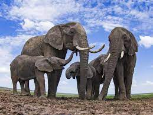

Elefante
Tipos de elefantes
¿Donde viven los elefantes?
informacion general de los elefantes
Caracteristicas de un elefante
hábitat de los elefantes
presa de los elefantes
Peso
Tamaño
Colmillos
hábitat de los elefantes
Los elefantes de los bosques africanos habitan la densa selva tropical de África occidental y central, mientras que los elefantes de la sabana africana habitan principalmente en las sabanas boscosas y los pastizales del África subsahariana.

presas de los elefantes"
Los elefantes adultos no son depredadores ni presas,los elefantes no cazan otras especies animales, y tampoco son cazados por otros animales.
peso
Los elefantes pueden llegar a pesar hasta 7 toneladas
Pueden medir hasta 3 metros de altura en los hombros.
Los elefantes machos tienen colmillos largos que utilizan para defenderse y buscar alimento.
Escíbeme